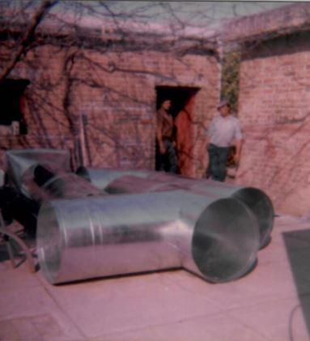
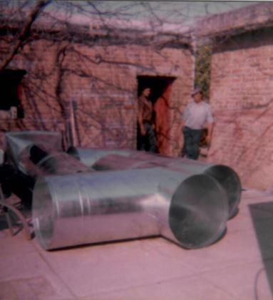

¿Quiénes somos? Lo que hacemos
Zinguería HOJALAT es una empresa familiar dedicada a la fabricación de productos de chapa fina (galvanizada, pre-pintada, acero) a los fines de originar soluciones de:
- Terminaciones y cierres para techos y desagues pluviales.
- Conductos de ventilación (climatización).
- Aislación.
- Trabajos especiales, plegados a medida, colocación en obra
- Instalación domiciliaria de estufas a leña de marcas reconocidas, con caños de chapa galvanizada, acero inoxidable, enlozado o lo que el cliente solicite.
 
